その他
|
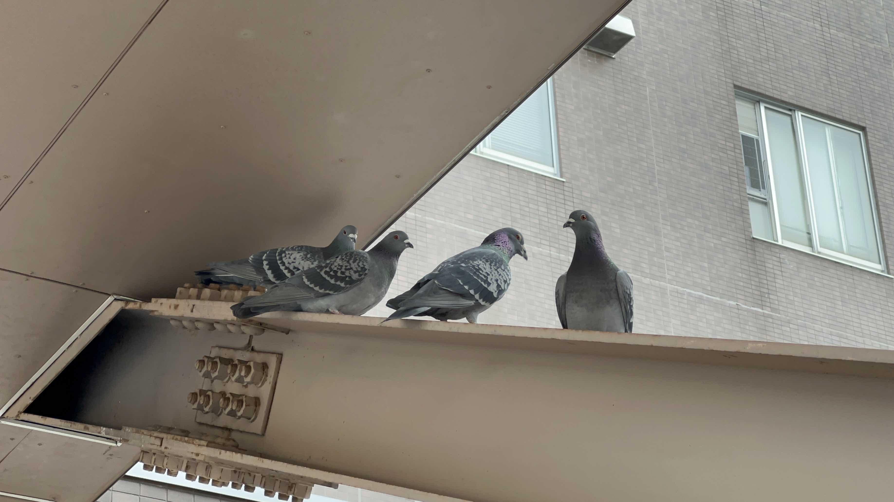 |
場所：工学部8号館と9号館の間の渡り廊下の下（山形県米沢市城南） 撮影：2023年3月9日 |
|
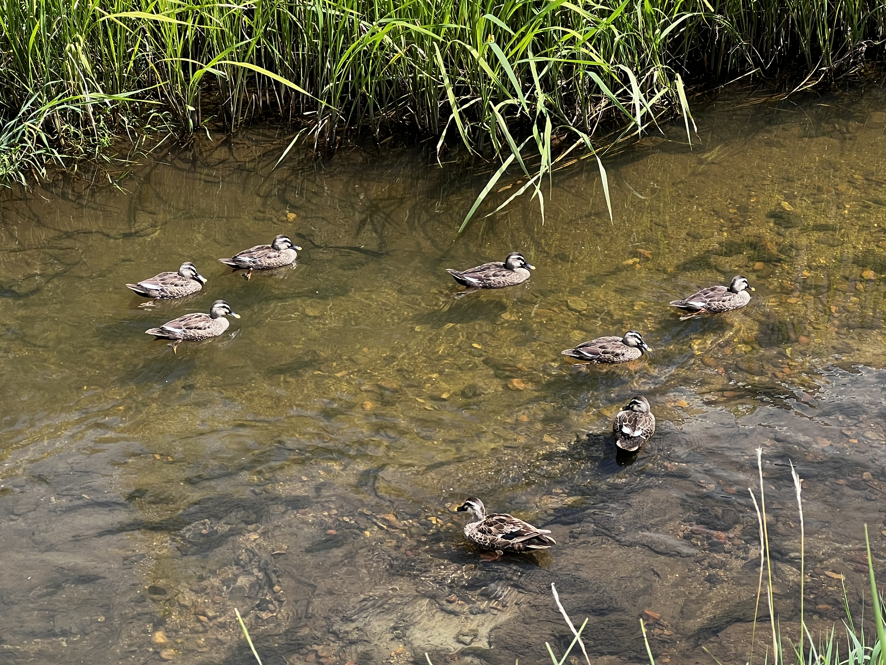 |
場所：堀立川（山形県米沢市林泉寺） 撮影：2022年8月1日 |
|
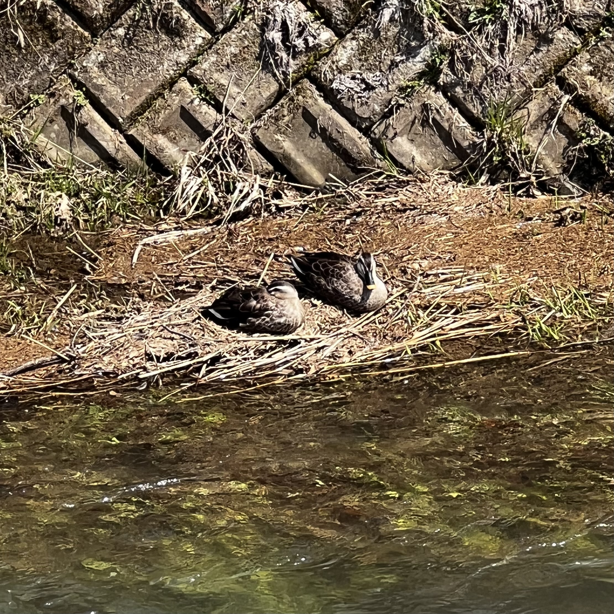 |
場所：堀立川（山形県米沢市林泉寺） 撮影：2022年4月7日 |
|
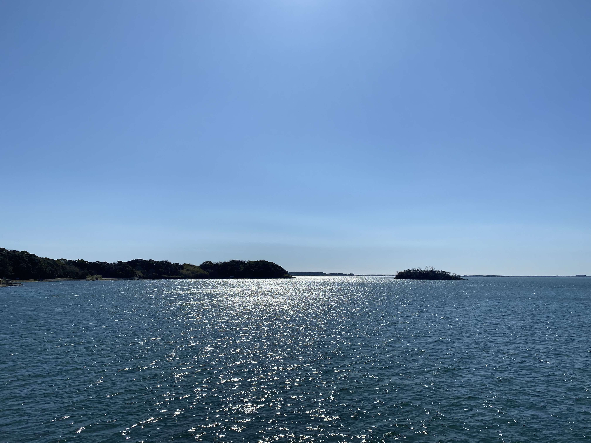 |
場所：三ヶ日みかん直売所（静岡県浜松市三ヶ日町大崎） 撮影：2020年3月15日 |
|
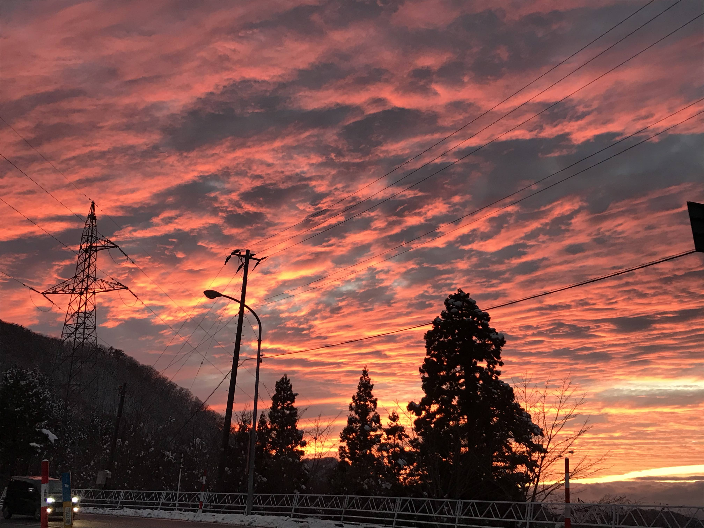 |
場所：関沢IC前（山形県山形市大字関沢） 撮影：2019年12月7日 |
|
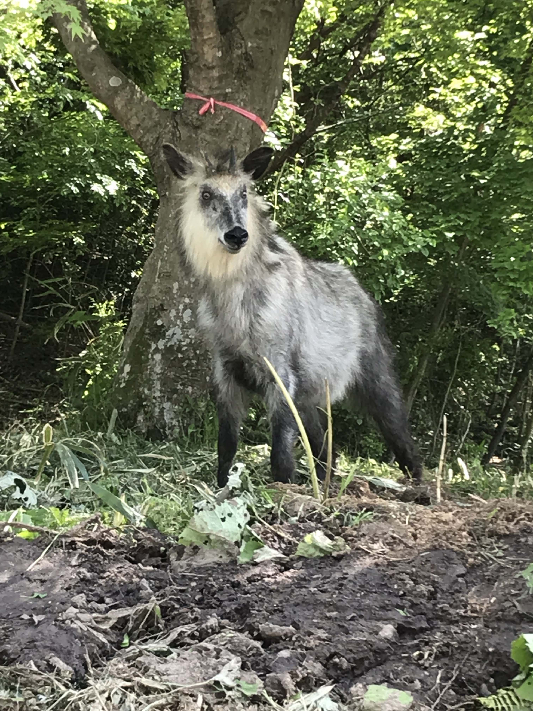 |
場所：宮城県仙台市青葉区荒巻字青葉地内 撮影：2019年5月24日 |
|
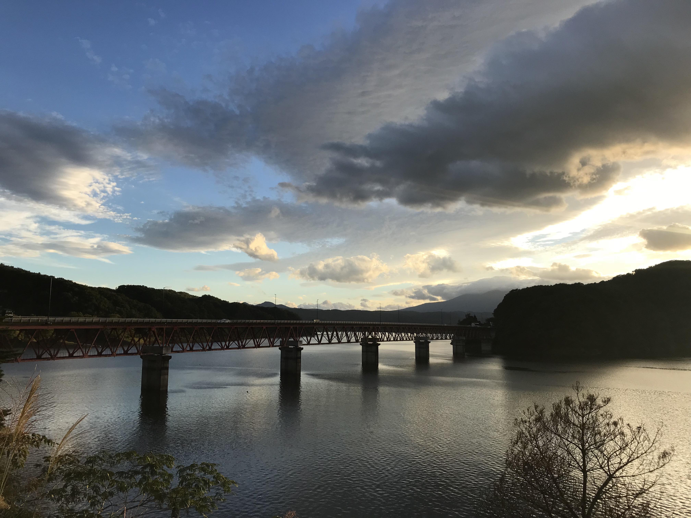 |
場所：釜房ダム（宮城県柴田郡川崎町） 撮影：2018年9月22日 |
|
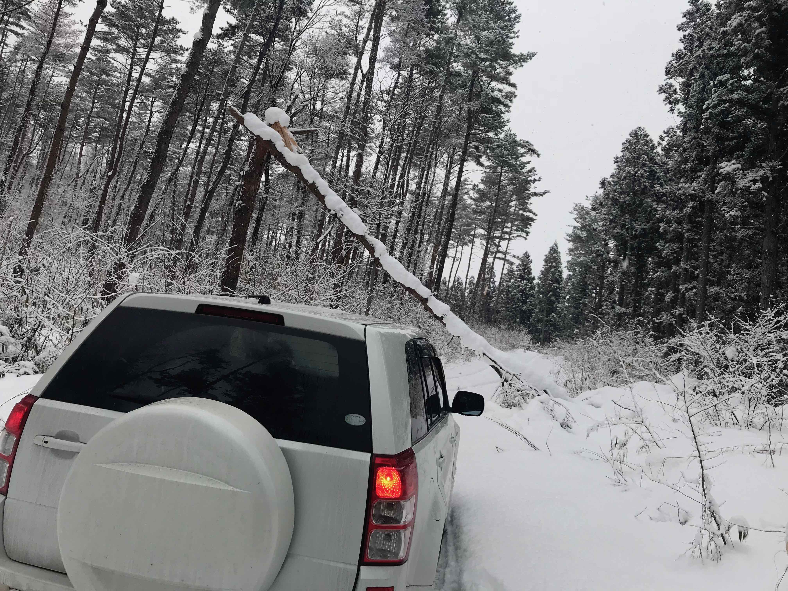 |
場所：林道笈坂〜石保線（宮城県仙台市泉区） 撮影：2017年12月29日 |
|
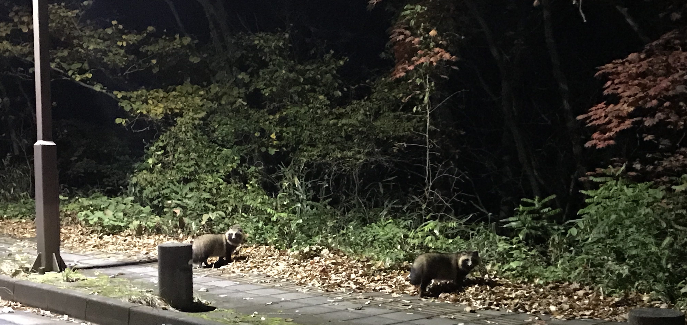 |
場所：宮城県仙台市青葉区荒巻字青葉地内 撮影：2017年11月16日 |
|
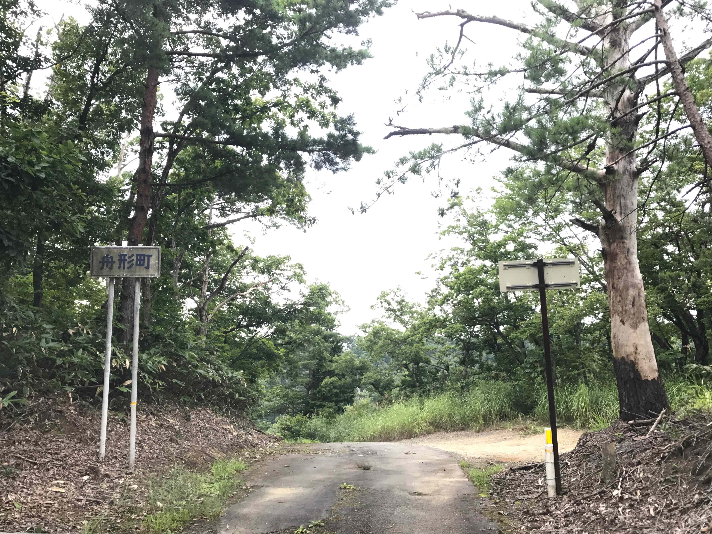 |
場所：山形県道318号新庄長沢尾花沢線 撮影：2017年8月28日 |
|
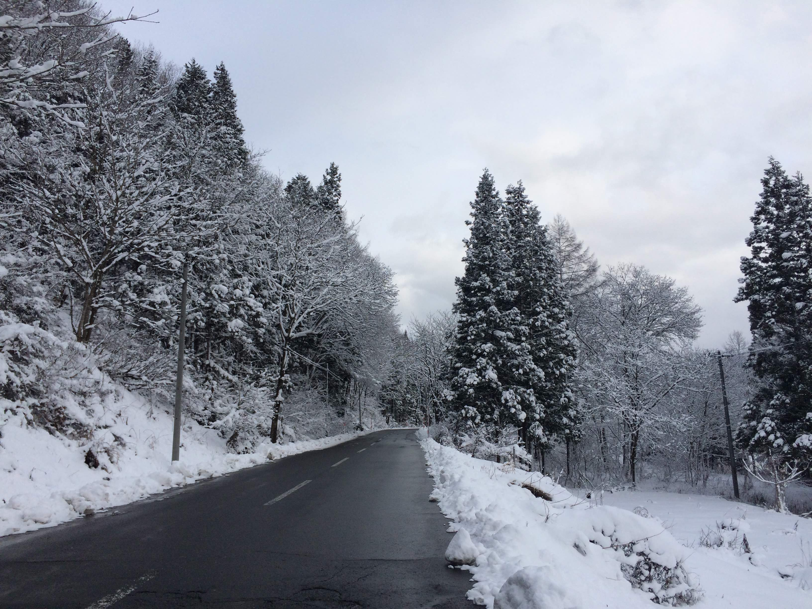 |
場所：山形県道234号綱木小野川館山線 撮影：2016年1月11日 |
今後の演奏会出演予定
- 2023年5月20日（土）山形フィルハーモニー交響楽団：2023 山フィル スプリングコンサート，山形市民会館，山形県山形市
- 2023年10月29日（日）湯沢市民管弦楽団：湯沢市民管弦楽団 第66回定期演奏会，湯沢文化会館，秋田県湯沢市
- 2023年11月4日（土）山形フィルハーモニー交響楽団：山形フィルハーモニー交響楽団 第62回定期演奏会，山形市民会館，山形県山形市
- 2023年12月3日（日）名称未定：名称未定，未定，宮城県角田市
- 2023年12月10日（日）山形フィルハーモニー交響楽団：第67回山形市民合同音楽祭，山形市民会館，山形県山形市
弦楽合奏（コントラバス）
2019年4月 – 現在：アンサンブルJOY
オーケストラ（コントラバス）
2011年12月 – 現在：山形フィルハーモニー交響楽団
2011年4月 – 2013年11月：山形大学工学部・米沢女子短期大学アカデミーストリングス合奏団
2011年4月 – 2013年11月：山形大学フィルハーモニーオーケストラ
吹奏楽
2020年6月 – 2021年10月：豊橋技術科学大学吹奏楽団（トロンボーン）
2008年4月 – 2011年3月：山形県立山形中央高等学校吹奏楽部（コントラバス）
2005年4月 – 2008年3月：中学校吹奏楽部（コントラバス -> チューバ -> コントラバス）